Transmitir ubicación
Comparte la ruta desde el bus
- Mantén esta pantalla abierta durante todo el recorrido.
- Permite el acceso a la ubicación cuando el navegador lo pida.
- Al llegar a la EIA, toca Finalizar viaje.

Ver mapaComparte la ruta desde el bus